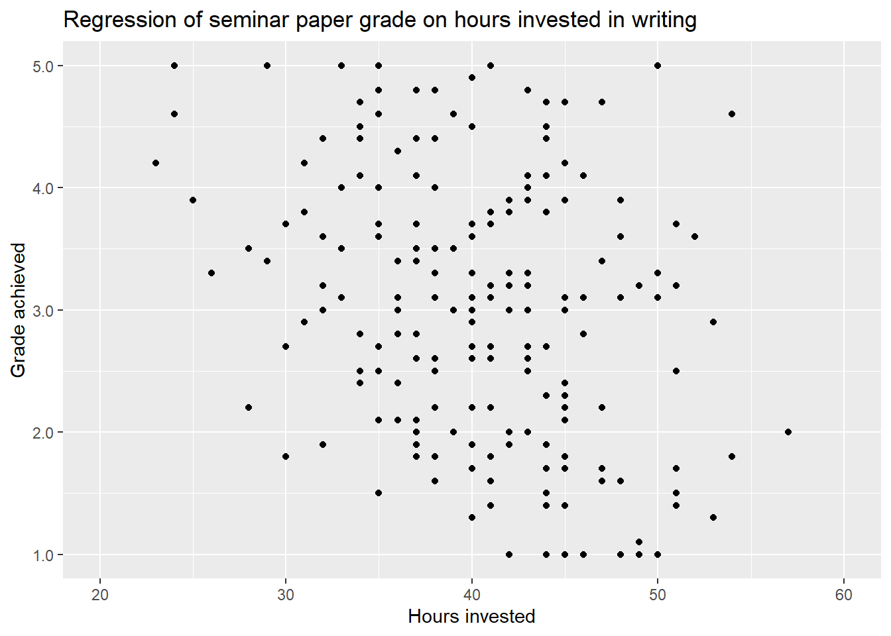
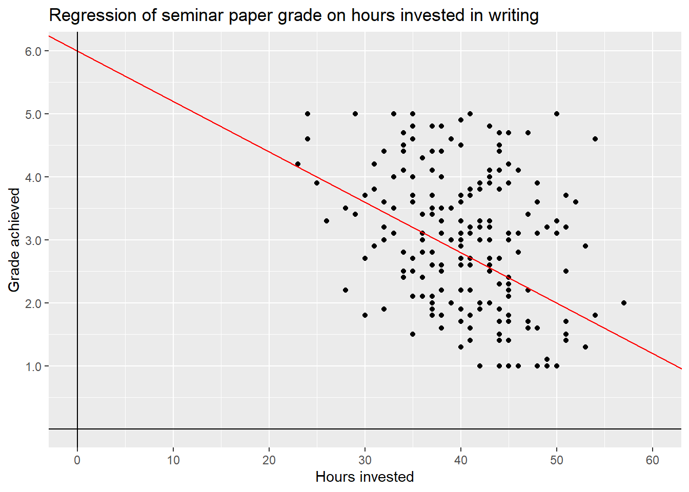
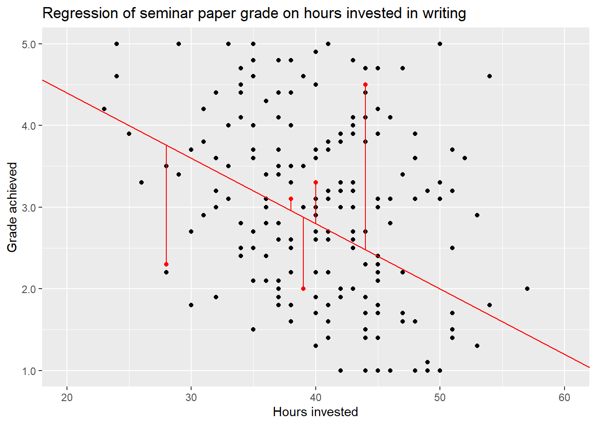
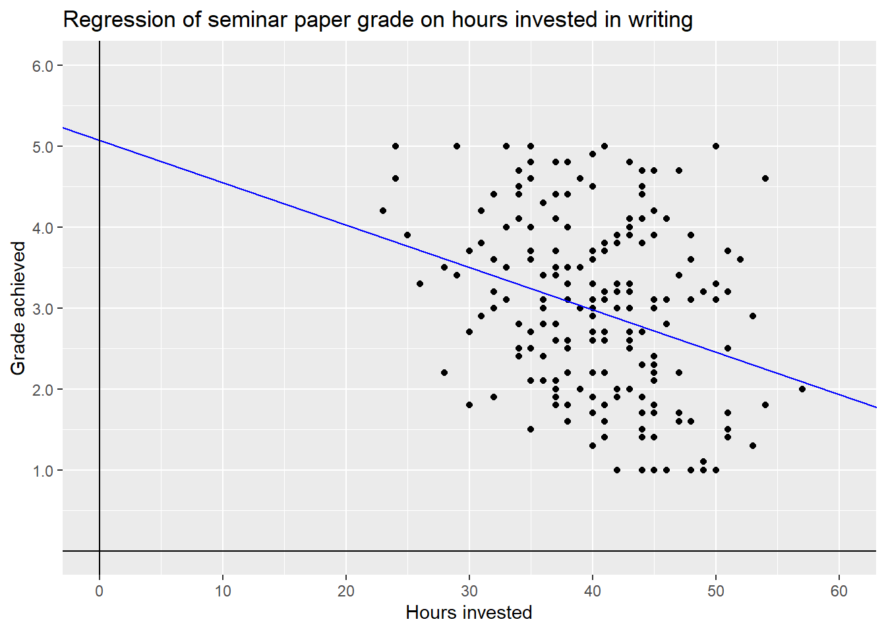
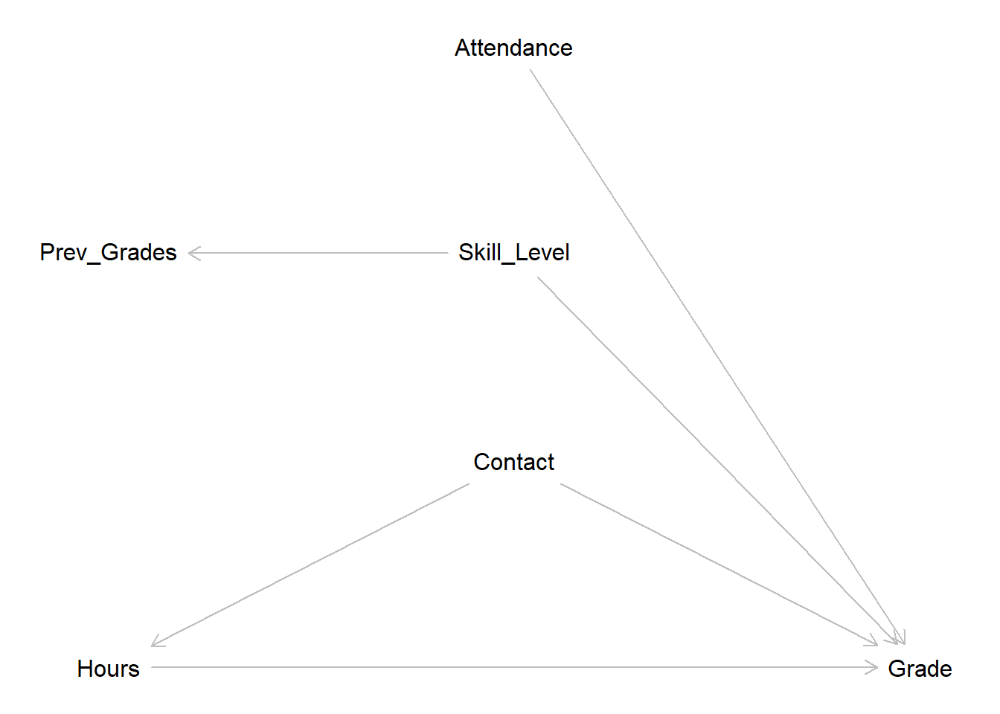

5 Linear Regression - Theory
5.1 What is Linear Regression
When we use statistical modelling in social sciences there are two main approaches. The more classical approach is to use modelling for estimating the effect that one or several independent variables have on one dependent variable. Maybe we are interested in knowing if a higher income has an effect on life satisfaction and if yes, what the direction and magnitude of this effect is. Does more money actually make you happier?
The other and more recent approach is to use modelling for making predictions with high accuracy. Based on the relationships between many independent variables and one dependent variable, we try to predict the latter for actual or hypothetical cases and their individual values for the independent variables. This approach lies at the heart of machine learning and drives many of the technologies we use on a daily basis from E-Mail spam filters to ChatGPT.
Linear regression is one of the many available modelling techniques and it can serve both approaches lined out above. In this session we will focus on using linear regression for estimating an effect of interest but we will return to prediction at a later point in this course.
But how do we know if we should choose linear regression for a specific task? This is not easy to answer as there are many alternatives and even variations of linear regression which may be better suited for a specific empirical problem. As this is an introduction to modelling and time is of the essence we opted to reduce the options and focus on two kind of models over the next weeks. Linear regression and logistic regression. Both are comparably easy to understand and use. Also, if we understand both of these techniques, we are in a good position to build upon our knowledge and learn all of those more complex and specific models that we will encounter in textbooks and scientific papers.
With the pool of options trimmed down to two, the question remains unanswered. Should I use linear or logistic regression for my task? But now the answer is relatively straightforward. What is the type of our dependent variable? Is it metric? Then we use linear regression. Is it binary or categorical? Then we use logistic regression. Linear regression will be the focus of this and the next weeks and then we will turn to logistic regression.
Now let us dive in and learn what linear regression is all about.
5.2 Examplary research question & data
Let us imagine that we are interested in a research question that asks what makes a good grade in a seminar paper. In particular we are interested in the effect that the hours a student invests in working on it has on the grade. Based on some theoretical considerations, and maybe some idealistic views, we derive our main hypotheses that putting in more hours will result in a better grade.
Now we also - hypothetically - held a small survey and asked 200 imaginary students some questions on how they approached writing a seminar paper. In particular we asked them how much time they spent working on the paper, if they have attended (almost) all seminar sessions, how closely they worked with their lecturers in preparing the paper and what the mean grade for previous papers was. As these imaginary students have already turned in their papers, we also know the grades they achieved.
Please note, that this is data on imaginary students, meaning we have simulated the data making some assumptions on how to achieve a good (or bad) grade in a paper. The assumptions we made do not necessarily reflect the way you write a good paper while still being based in our experience on what it takes to achieve a good grade. But remember, no real students were harmed in making up this example data.
Let us have a first look on the data: XXX ALIGN WITH EDA XXX
## Warning: package 'skimr' was built under R version 4.2.3| Name | grades |
| Number of rows | 200 |
| Number of columns | 7 |
| _______________________ | |
| Column type frequency: | |
| factor | 1 |
| logical | 1 |
| numeric | 5 |
| ________________________ | |
| Group variables | None |
Variable type: factor
| skim_variable | n_missing | complete_rate | ordered | n_unique | top_counts |
|---|---|---|---|---|---|
| contact | 0 | 1 | FALSE | 3 | No : 80, In : 70, E-M: 50 |
Variable type: logical
| skim_variable | n_missing | complete_rate | mean | count |
|---|---|---|---|---|
| attendance | 0 | 1 | 0.76 | TRU: 153, FAL: 47 |
Variable type: numeric
| skim_variable | n_missing | complete_rate | mean | sd | p0 | p25 | p50 | p75 | p100 | hist |
|---|---|---|---|---|---|---|---|---|---|---|
| grade | 0 | 1 | 2.97 | 1.08 | 1.00 | 2.10 | 3.00 | 3.73 | 5.00 | ▅▆▇▆▅ |
| hours | 0 | 1 | 40.33 | 6.29 | 23.00 | 36.00 | 41.00 | 45.00 | 57.00 | ▁▅▇▅▁ |
| previous_grades | 0 | 1 | 2.94 | 0.96 | 1.00 | 2.30 | 2.95 | 3.62 | 5.00 | ▅▇▇▆▂ |
| previous_grades_centered | 0 | 1 | 0.00 | 0.96 | -1.94 | -0.64 | 0.01 | 0.69 | 2.06 | ▅▇▇▆▂ |
| hours_centered | 0 | 1 | 0.00 | 6.29 | -17.33 | -4.33 | 0.67 | 4.67 | 16.67 | ▁▅▇▅▁ |
Right now, the observations are ordered by the grade of the seminar paper which
run from \(1.0\) to \(5.0\) in increments of \(0.1\). While this is somewhat
unrealistic - the german grading system actually only uses theincrements \(.0\),
\(.3\) and \(.7\) - simulating the data in this way will make the demonstrations on
linear regression easier and more straightforward. The variable
previous_grades is set up in the same way and represents the mean of the
grades the student received up to this point hours represents the time a
student spent on writing the paper, ranging from \(23 - 57\) hours, with a mean of
about \(40\). Besides these metric variables, the data set also contains two
categorical measures. attendance is a dummy variable, meaning it can only
have the values \(1\) or \(0\) or TRUE and FALSE in this case, as it is saved as
a logical variable. TRUE represents that a student attended almost all seminar
sessions before writing the paper - which about \(77%\) did -, FALSE states that
they did not.
contact is a factor variable with three categories and shows the answers to
the imaginary question on how much contact the student had to the lecturer
before starting the writing process. Besides No contact the students could
have had E-Mail contact to state ther research question and get some short
written feedback or meet the lecturer In Person to achieve a deeper discussion
of the question and laid out plan for writing the paper.
The two additional variables are versions of previous_grades and hours that
are centered on their respective means. They will come into play at a later
point in this session.
Let’s have a look at some observations.
## # A tibble: 10 × 7
## grade hours previous_grades attendance contact previous_grades_centered
## <dbl> <int> <dbl> <lgl> <fct> <dbl>
## 1 1 50 1.4 TRUE E-Mail -1.54
## 2 1 46 1 TRUE E-Mail -1.94
## 3 1 42 1 TRUE In Person -1.94
## 4 1 49 1 FALSE In Person -1.94
## 5 1 42 1.2 TRUE In Person -1.74
## 6 1 46 1.8 TRUE In Person -1.14
## 7 1 44 1.4 FALSE In Person -1.54
## 8 1 45 2 TRUE In Person -0.935
## 9 1 48 1 TRUE In Person -1.94
## 10 1 45 2 TRUE In Person -0.935
## # ℹ 1 more variable: hours_centered <dbl>From this first 10 rows, we can see that the students with the best grades spent more than 40 hours on writing, have already achieved good grades in their papers up to this point and at least had some contact to the lecturers. Most also regularly attended the seminar but two did not and still achieved a \(1.0\) in their grade.
So what makes a bad grade?
## # A tibble: 10 × 7
## grade hours previous_grades attendance contact previous_grades_centered
## <dbl> <int> <dbl> <lgl> <fct> <dbl>
## 1 4.8 37 4.2 TRUE No contact 1.27
## 2 4.8 38 4.3 TRUE E-Mail 1.36
## 3 4.8 35 4.4 TRUE E-Mail 1.47
## 4 4.9 40 4.2 TRUE E-Mail 1.27
## 5 5 35 3.9 FALSE No contact 0.965
## 6 5 41 4.9 TRUE No contact 1.97
## 7 5 24 4.7 TRUE E-Mail 1.76
## 8 5 33 5 TRUE E-Mail 2.06
## 9 5 29 4.1 FALSE E-Mail 1.16
## 10 5 50 4.6 FALSE E-Mail 1.66
## # ℹ 1 more variable: hours_centered <dbl>Here the picture seems less clear. While most students did not put in as many hours, some did and still failed to pass. Half of the students that received a \(5.0\) regularly attended and most at least had E-Mail contact before writing their paper. What seems to be more consistent though is that the mean of the previous grades is rather low.
So what do we know now? Does a good or bad track record in grades predict all future grades? This seems not only unrealistic but also a kind of sad take home message. To get a better understanding on which of the potential influential variables had an effect on the final grade and what the magnitude and direction of these effects was, we now turn to linear regression.
5.3 Simple Linear Regression
In a simple linear regression, the model is used to describe the relationship between one dependent and one independant or explanatory variable. The question this model can answer for us is, by how much does the dependent variable increase or decrease, when the explanatory variable increases by \(1\)?
Returning to our exemplary research question on what makes a good grade in a
seminar paper an intuitive hypotheses would be, that the grade gets better the
more hours a student invests in writing the paper. In this case we assume a
linear relationship between the independent variable hours and the dependent
variable grade. As german grades are better the lower their value, we thus
would assume a negative effect from hours on grade.
Before turning to the formalities and practical application of a simple linear regression model, let us first have a look on this relationship by plotting the variables against each other.

When we are talking about dependent and independent variables, there is the convention to plot former on the x-axis and the latter on the y-axis. So the y-variable is to be explained and the x-variable is used to explain it. This convention will also be used in all formulas in this seminar.
Looking at the plot we first see a cloud of dots, representing all combinations
of hours and grade in all our \(200\) observations. It may be hard to pick out
any pattern, but looking closely we can observe that overall the dots seem to
follow a downward slope from the upper left - indicating few hours worked and a
worse grade - towards the lower right - indicating more invested hours and a
better grade. This would be the relationship stated in our hypotheses. The more
hours a student works on a seminar paper the better the final grade will be.
We can try to describe this pattern by adding a line from the upper left to the lower right.

This describes the realtionship between the two variables as linear. Each hour invested decreases the grade by a certain amount, for this proposed line by exactly \(0.08\) points. Remember that decreasing the value of the grade actually means getting a better grade.
But is this the only possible line or even the correct one? Most certainly not as the values used to draw the line were only a wild guess by the authors. We could imagine several other lines that also look more or less reasonable - as well as some that look unreasonable - and add them to the plot.

While we have some intution, that especially the green line misses the mark by a lot, we can’t really decide between the others just by looking at the plot. The data points are way to dispersed to see the relationship clearly.
The goal of using a simple linear regression model is to identify the one line that describes the relationship the best. The best meaning, with as little error as possible.
XXX OVERLAPPING DOTS? XXX
5.3.1 Regression Formula
To understand how these lines in the above plot were conceived and how to find the line with the best fit, i.e. the lowest error, we have to understand the formular for linear regression. While formulas may always be kind of daunting, we are in luck as tis particular one is actually quite easy to understand, especially when paired with a graphical representation.
\[y = \beta_0 + \beta_1*x_1 + \epsilon\]
Let us first look at the parts we already know. \(y\) is the dependent variable, in our case the grade achieved. So one thing is for sure, the whole right part of the equation has to be used to calculate the value of \(y\) from the data, i.e. the dependent variable \(x\). Here we have three terms. Let us skip the first one for now and focus on the second one \(\beta_1*x_1\).
\(x_1\) is the dependent variable, in our case hours. \(\beta_1\) is the
redression coefficient for \(x_1\). This value gives us the slope of the
regression line. Based on this, we can start rewriting the general formula and
tailor it to our specific use case.
\[y_{grade} = \beta_0 + \beta_{hours}*x_{hours} + \epsilon\]
Let us return to the first wild guess we made above.

Here we guessed, that an increase in time invested of one hour decreases the
value of grade by \(0.08\). This is the slope of the red line and thus also the
coefficient in the regression formula that is used in computing said line. So,
\(\beta_{hours} = -0.08\). We can insert this value into our formula.
\[y_{grade} = \beta_0 -0.08*x_{hours} + \epsilon\]
In this way the value of \(x_{hours}\) is multiplied by \(-0.08\). Let us assume a student worked \(40\) hours on their paper. \(-0.08*40\) being \(-3.2\), we know, that working 40 hours on a paper on average - more on that later - leads to a \(3.2\) lower grade value and thus a better grade. But \(3.2\) lower than what?
Looking at the formula again, we see that subtract this value from \(\beta_0\). This is the intercept, the value at which the line intersects with the y-axis. Let us zoom out on our plot, to see what happens.

We can now see the point where the red line intersects with the y-axis. This is the intercept of this line, i.e. \(\beta_0 = 6\).
\[y_{grade} = 6 -0.08*x_{hours} + \epsilon\]
If we now again assume a time investment of \(40\) hours, we can compute \(6-0.08*40 = 2.8\). So our red regression line - which is still only a wild guess - assumes, that working 40 hours on a seminar paper will result in a grade of \(2.8\), on avarage. We can mark these values in our plot

The red dot is the intersection of the values hours = 40 and grade = 2.8.
As this is the value for \(y\) our regression line assumes a student with a time
investment of 40 hours achieves, the red dot also lies exactly on the red line.
But if we look at the plot once again, we can see that most actual observations for students that invested 40 hours do not actually lie on the regression line but are scattered above and below the line. So some of these students achieve much worse or much better grades than \(2.8\) investing the same amount of time in their work. This leads us to the last part of the formula, \(\epsilon\).
This is the error term. Having data that is dispersed like this - and any real world data will always be - our linear line will never be able to pass exactly through every data point. Some points may lie exactly on the line, but many or most will not.
We can visualize this. To keep the plot readable, we only do this for some random observations but in reality the distance of every data point from the regression line is taken into account.
## # A tibble: 5 × 7
## grade hours previous_grades attendance contact previous_grades_centered
## <dbl> <int> <dbl> <lgl> <fct> <dbl>
## 1 2.3 45 2.6 TRUE No contact -0.335
## 2 1.9 44 2.8 TRUE In Person -0.135
## 3 3.1 38 3.7 TRUE In Person 0.765
## 4 3.3 40 3.4 TRUE E-Mail 0.465
## 5 4.6 54 4.5 TRUE No contact 1.56
## # ℹ 1 more variable: hours_centered <dbl>
The distance of these or rather all points from the line, the residuals, are represented in the error term \(\epsilon\). It is a measure for how wrong our line is in describing the data in it’s entirety. So why is it wrong? We can not say for sure, but there are two common main reasons.
For one, there may be other variables that also influence the relationship between invested hours and achieved grade, something that we will return to later in this session when we expand the idea of linear regression to multiple independent variables.
But there is also random variation present in every bit of real world data. While our data is simulated we also added random variation on purpose. Because this is what real world data is, it’s messy and it’s noisy.
Not every seminar paper that had the same time investment, e.g. 40 hours, will have the same quality in results. There may be other influential variables, e.g. the student’s general skill level or if they sought assistance by their lecturer in preparing the paper, influencing the final grade. But even if the quality of the paper after working 40 hours would be the same for each student, measurement error, i.e. noise, will be introduced because not every lecturer will grade exactly the same or maybe because papers were submitted at different time points and grading standards may have changed. If we can not measure these variables we have to accept these unobservable sources of noise and hope, where hope actually means thorough theoretical and methodical thinking, that we can still measure our effect of interest. But his also means, that measuring and modelling always includes uncertainty. We never know for certain if and to what extent our results are influenced by unobservable variables and random variation. Still, there are ways to assess this uncertainty, which we will regularly return to during the course. This should not stop quantitative social scientists from making strong or even bold arguments based in thorough theoretical thinking and responsible data analysis, but we always have to acknowledge the uncertainty included in every step and make it a part of our interpretations and conclusions.
XXX MAYBE SHORTEN THE SERMON… XXX
The error term \(\epsilon\) is the final piece of the puzzle in actually computing a linear regression model. Without jumping into the mathematics of it all, the technique that is used to estimate the coefficients \(\beta_0\) and \(\beta_1\) is called OLS - Ordinary Least Squares. What it basically does, is to take the squares of all residuals, i.e. the distances of the data points from the regression line, sum them up and minimise this value. All this substantialy means is, that OLS searches the regression line with lowest amount of error, i.e. the lowest overall distance from the actual data points.
This computation gives us estimates for the regression coefficients in this formula:
\(\hat{y} = b_0 +b_1*x_1\)
We can see two differences to the formula we started with. First, we write \(\hat{y}\) - pronounced as “y hat” - instead of \(y\). At the same time, we exclude the error term \(\epsilon\). This means that we are no longer computing the actual value of \(y\), as in the point on the regression line for a certain value of \(x_1\) \(+\) the error, but the estimate \(\hat{y}\), as in the point on the regression line that is predicted for a certain value of \(x_1\). Second, we write \(b\) instead of \(\beta\). This also alludes to the fact that we are now computing an estimate for the coefficients based on the data available and not the real and unknown value of \(\beta\).
XXX MAYBE ALSO SOME CUTTING REQUIRED XXX
XXX include “on average” XXX
5.3.2 Regressing grade on hours
Now that we have a firmer understanding on what linear regression actually is
and does, we can finally get to the fun part and use the technique for
estimating the effect of hours on grade or in other words, regress
grade on hours.
##
## Call:
## lm(formula = grade ~ hours, data = grades)
##
## Residuals:
## Min 1Q Median 3Q Max
## -1.88006 -0.83961 -0.08006 0.77006 2.53881
##
## Coefficients:
## Estimate Std. Error t value Pr(>|t|)
## (Intercept) 5.07912 0.47306 10.737 < 2e-16 ***
## hours -0.05236 0.01159 -4.517 1.07e-05 ***
## ---
## Signif. codes: 0 '***' 0.001 '**' 0.01 '*' 0.05 '.' 0.1 ' ' 1
##
## Residual standard error: 1.028 on 198 degrees of freedom
## Multiple R-squared: 0.09344, Adjusted R-squared: 0.08886
## F-statistic: 20.41 on 1 and 198 DF, p-value: 1.075e-05This is the output from a simple linear regression for grade on hours from
R. How to do this in practice and what the first to lines mean will be the topic
of the next sesion. For now we will focus on the coefficient block and
introduce the additional elements of the output on by one during this session.
The column Estimate gives us the values for \(\beta_0\) and \(\beta_1\) discussed
above. The estimated coefficient for hours tells us that out intuition was
right, the more hours a student invests in writing a paper, the better the grade
will be. In this case every additional hour spent on working will decrease the
value of the grade by \(-0.05236\) points. In keeping with the example of a 40
hour workload this leads to a decrease of \(-0.05236 * 40 = -2.0944\) points.
Adding the intercept from the same column, the estimated grade after working 40
hours is \(5.07912 -0.05236 * 40 = 2.98472\). So on average a student from our
simulated data set will pass after 40 hours of work but will not get a great
grade.
Remember, this is the expected average value. This does not mean that some
students will not get better or worse grades, or even fail to pass, after this
amount of time investment, as we hav seen in the plot.
Now that we know the coefficients for the regression line with the best fit, i.e. the lowest error, we can again visualise the result.

Now, what grade can a student expect, on average, if they invest exactly 0 hours, i.e. do nothing and hand in a blank paper. We can look at the graph or to achieve a more precise result, calculate it.
\[5.07912 -0.05236 * 0 = 5.07912\]
As \(x_{hours} = 0\) for this theoretical example, the estimated value \(\hat{y}\) or \(y_{grade}\) is the same as the intercept \(\beta_0\). This is what the intercept represents in general, the estimated value \(\hat{y}\) when the dependent variable is \(0\).
Now, investing zero hours in a seminar paper is not only not advisable, it is also not a value we observed in our data. If the data would include observations with zero hours of time invested, the grade would be a firm \(5.0\) and the same would be true for low single digits, i.e. turning in a two-pager as a seminar paper. The takeaway is, that the model is highly dependent on the data that it is trained on. If the data would have included such cases we could expect a higher intercept and a steeper slope, i.e. stronger negative coefficient.
Luckily all our simulated students have put in at least some hours. But as we do
not have data for zero to \(22\) hours, we can not really make reliable estimates
in this range. Because of this, it does not really make sense to enter hours
into the regression model as ranging from \(0\) to \(57\). One solution that is
often used for metric variables is to center them on their mean. This can be
achieved by simply subtracting the mean of \(x\) from each individual value:
\(x_i - \bar{x}\).
We can now rerun the regression.
##
## Call:
## lm(formula = grade ~ hours_centered, data = grades)
##
## Residuals:
## Min 1Q Median 3Q Max
## -1.88006 -0.83961 -0.08006 0.77006 2.53881
##
## Coefficients:
## Estimate Std. Error t value Pr(>|t|)
## (Intercept) 2.96750 0.07267 40.835 < 2e-16 ***
## hours_centered -0.05236 0.01159 -4.517 1.07e-05 ***
## ---
## Signif. codes: 0 '***' 0.001 '**' 0.01 '*' 0.05 '.' 0.1 ' ' 1
##
## Residual standard error: 1.028 on 198 degrees of freedom
## Multiple R-squared: 0.09344, Adjusted R-squared: 0.08886
## F-statistic: 20.41 on 1 and 198 DF, p-value: 1.075e-05Comparing the results to the first model shows us, that the coefficient for \(b_{hours\_centered}\) is exactly the same as for \(b_{hours}\). So the effect of working more hours has not changed. What has changed is the value of the intercept. This will make more sense if we again plot the regression line.

By centering the x-Variable on its mean we have changed its interpretation.
A value of hours = 0 now stands for investing as much time as is the mean
of hours in the whole data set, which in this case is \(40.33\) hours. Positive
values indicate that a student worked \(x\) hours more, negatives indicate \(-x\)
hours less compared to the mean. In this way, we also moved the y-axis and thus
changed the interpretation of the intercept. Its new value of \(2.9675\) now
indicates the estimate for a student who invests the mean value of hours in
their work, i.e. \(40.33\). We will use this version of the variable for the rest
of the session.
5.4 Multiple Linear Regression
Maybe explaining the grade a student receives solely based on the hours of invested time, does not paint the whole picture. As we have alluded to, there may be other variables that could also have an effect of the final grade.
A simple linear regression only allows for one independent variable. This is why we need multiple linear regression if we want to start introducing additional variables into the model. Luckily this is easy to understand as we already know the formula for a simple linear regression.
\[y = \beta_0 + \beta_1*x_1 + \epsilon\]
To change a simple into a multiple linear regression, we just start adding the additional variables and their coefficients additively to the formula.
\[y = \beta_0 + \beta_1*x_1 + \beta_2*x_2 + ... + \beta_k*x_k + \epsilon\]
So to add a second variable and its coeffcient we add the term \(+ \beta_2*x_2\) and so on until we added all independent varibles of interest \(k\) to the model. Everything else works exactly as described above for the simple model.
5.4.1 Adding additional variables
We already expected that the mean of the previous grades could be a strong predictor for future grades. We could understand these as a proxy variable for the general skill level of a student. The higher the skill level, the higher previous grades will have been.
How we can add additional variables in R code will again be a topic for the next
session, but let us look at the results of a regression of grade on
hours_centered and previous_grades_centered, the latter being centered on the
mean previous grade of \(2.935\).
##
## Call:
## lm(formula = grade ~ hours_centered + previous_grades_centered,
## data = grades)
##
## Residuals:
## Min 1Q Median 3Q Max
## -1.44462 -0.30556 0.00622 0.32878 1.31002
##
## Coefficients:
## Estimate Std. Error t value Pr(>|t|)
## (Intercept) 2.967500 0.038316 77.449 <2e-16 ***
## hours_centered -0.056543 0.006114 -9.248 <2e-16 ***
## previous_grades_centered 0.904079 0.039830 22.699 <2e-16 ***
## ---
## Signif. codes: 0 '***' 0.001 '**' 0.01 '*' 0.05 '.' 0.1 ' ' 1
##
## Residual standard error: 0.5419 on 197 degrees of freedom
## Multiple R-squared: 0.7492, Adjusted R-squared: 0.7467
## F-statistic: 294.3 on 2 and 197 DF, p-value: < 2.2e-16As we added a new variable, we now see three coefficients. The intercept has not changed. It now indicates the estimated grade for a student who invests the mean amount of hours, \(40.33\), and whose previous grades are exactly \(2.935\).
The coefficient for hours_centered got mildly more negative, still telling us
that the value of grade gets lower, the more hours are invested in writing the
paper. This coefficient now gives us the effect while controlling for the
effect of previous_grades_centered. This is what multiple linear regression
does, giving us the coefficients for our variables of interest while keeping all
other independent variables at specific values. As we have centered the variable
for previous grades, the coefficient for hours centered gives us the effect
when the previous grades were exactly at the mean of \(2,935\).
In the same way, the coefficient for previous_grades_centered gives us the
effect of previous grades when the invested hours are controlled for, in this
case when the invested hours were exactly \(40.33\). The coefficient is rather
high and positive. This indicates that a student with a previous grade value
that is \(1\) above the mean, is estimated to receive a new grade that is \(0.9\)
points above the intercept. This means, that the previous grade is a very strong
predictor for the new grade.
While plotting in more than two dimensions gets really hard, we can still calculate \(\hat{y}\) for certain values of both independent variables. We already know the predicted grade for a student with mean values on both independent variables, as this is the intercept. To make sure that we correct, we can calculate it again.
\[b_0 + b_{hours\_centered}*0 + b_{previous\_grades\_centered}*0 = 2.9675\]
For this case we can see, that the previous grade actually is a strong predictor, as the previous and new grades are substantially the same.
What if a student whose previous grades were \(1\) above the mean, so just below \(4.0\) but who decides to invest \(10\) hours more than the mean for the new paper?
\[2.9675 - 0.056543 * 10 + 0.904079 * 1 = 3.306149\]
So the good message is, while previous grades are a strong predictor, putting in more hours still leads to better grades.
What if a really good student decides to rely on their skill and to work less this time?
\[2.9675 - 0.056543 * -10 + 0.904079 * -2 = 1.724772\]
While \(1.7\) is still a very good grade, working 10 less hours than the mean of students leads to a substantially worse estimate compared to the about \(1.0\) received in previous grades.
5.4.2 Adding dummy variables
Another variable that could be of interest in explaining the received grade,
is if a student attended most of the seminar sessions.
attendance holds this information in the form of a dummy variable. Dummies can
only have two states. “Yes” or “No”, “1” or “0” or in this case “TRUE” or
“FALSE”.
Let us add the variable to our model.
##
## Call:
## lm(formula = grade ~ hours_centered + previous_grades_centered +
## attendance, data = grades)
##
## Residuals:
## Min 1Q Median 3Q Max
## -1.41059 -0.30910 0.01667 0.35607 1.29849
##
## Coefficients:
## Estimate Std. Error t value Pr(>|t|)
## (Intercept) 3.157411 0.078658 40.141 < 2e-16 ***
## hours_centered -0.053942 0.006088 -8.860 4.85e-16 ***
## previous_grades_centered 0.911802 0.039282 23.212 < 2e-16 ***
## attendanceTRUE -0.248250 0.090246 -2.751 0.0065 **
## ---
## Signif. codes: 0 '***' 0.001 '**' 0.01 '*' 0.05 '.' 0.1 ' ' 1
##
## Residual standard error: 0.5331 on 196 degrees of freedom
## Multiple R-squared: 0.7586, Adjusted R-squared: 0.7549
## F-statistic: 205.3 on 3 and 196 DF, p-value: < 2.2e-16This gives us a new line in the R Output holding an estimate for
attendanceTRUE. What is meant by this? In contrast to the metric variables we
have uses in our model up to this point, a dummy variable - or binary variable -
can only have two states. As we are using a logical variable here, it can only
have the value TRUE - here indicating regular attendance - or FALSE. So what
the output shows us, is the effect of attendance being TRUE compared to being
FALSE. If a student did regularly attend the seminar, the estimated grade is
\(-0.248250\) lower compared to when they did not.
We can observe what happens in the formula:
\[\hat{y} = b_0 + b_{hours\_centered}*x_{hours\_centered} + b_{previous\_grades\_centeterd}*x_{previous\_grades\_centeterd} + b_{attendance} * x_{attendance}\]
If you calculate with TRUE and FALSE in R, the values \(1\) and \(0\) are used
respectively. So \(x_{attendance}\) can either have the value \(1\) for regular
attendance or \(0\) for not so regular attendance.
If a student did regularly attend, the coefficient $b_{attendance} becomes a part of the estimate \(\hat{y}\):
\[\hat{y} = b_0 + b_{hours\_centered}*x_{hours\_centered} + b_{previous\_grades\_centeterd}*x_{previous\_grades\_centeterd} + b_{attendance} * 1\]
If stduent did not regularly attended, this happens:
\[\hat{y} = b_0 + b_{hours\_centered}*x_{hours\_centered} + b_{previous\_grades\_centeterd}*x_{previous\_grades\_centeterd} + b_{attendance} * 0\] \[\hat{y} = b_0 + b_{hours\_centered}*x_{hours\_centered} + b_{previous\_grades\_centeterd}*x_{previous\_grades\_centeterd}\]
The coeeffcient is no longer a part of the estimate. One can basically say, the coefficient gets switched on or off by the value of the dummy variable.
So while the estimate for a student with mean values for invested hours and previous grades who did not attend is the intercept of \(3.157411\) for the same student with attendance we can calculate the estimate as:
\[3.157411 - 0.053942*0 + 0.911802*0 - 0.248250 * 1 = 3.157411 - 0.248250 = 2.909161\]
It seems attending class is an easy way to raise one’s grades.
5.4.3 Adding categorical variables
We have one further variable in our simulated data set that could be of interest
in explaining, what makes a good grade in a seminar paper.contact is a factor
variable. It can take three different categories. No contact indicates that
the student did not contact the lecturer to discuss a research question or the
laid out plan for the paper. E-Mail means that there was some written contact
and at least the basics for the paper were discussed before writing. Lastly,
In Person stands for an in depth discussion with the lecturer, clearing up
problems beforehand and having a more stringent vision for the paper before
writing the first word.
Let us add the variable to our model.
##
## Call:
## lm(formula = grade ~ hours_centered + previous_grades_centered +
## attendance + contact, data = grades)
##
## Residuals:
## Min 1Q Median 3Q Max
## -1.3835 -0.2525 0.0167 0.2678 0.9347
##
## Coefficients:
## Estimate Std. Error t value Pr(>|t|)
## (Intercept) 3.617949 0.068077 53.145 < 2e-16 ***
## hours_centered -0.050830 0.004433 -11.466 < 2e-16 ***
## previous_grades_centered 0.874123 0.028657 30.503 < 2e-16 ***
## attendanceTRUE -0.324653 0.065781 -4.935 1.72e-06 ***
## contactE-Mail -0.413808 0.069817 -5.927 1.39e-08 ***
## contactIn Person -0.853252 0.063964 -13.340 < 2e-16 ***
## ---
## Signif. codes: 0 '***' 0.001 '**' 0.01 '*' 0.05 '.' 0.1 ' ' 1
##
## Residual standard error: 0.3869 on 194 degrees of freedom
## Multiple R-squared: 0.8741, Adjusted R-squared: 0.8709
## F-statistic: 269.4 on 5 and 194 DF, p-value: < 2.2e-16Wait, we entered three categories into the model and got estimates for two of
them. What happened? What R does is to create two dummy variables on the fly.
The first discerns between having E-Mail contact or no contact at all. The
second one between having contact in person to no contact at all. So for
categorical variables in regression models we always compare being in one
category to being in the base category. In this case the base category is
No contact but we could also change the base category. It depends on what we
are interested in comparing to. For our example comparing the effects of having
more in depth contact to having none makes sense.
Let us look at our formula again:
\[\hat{y} = b_0 + b_{hours\_centered}*x_{hours\_centered} + b_{previous\_grades\_centeterd}*x_{previous\_grades\_centeterd} + b_{attendance} * x_{attendance} + b_{E-Mail} * x_{E-Mail} + b_{In Person} * x_{In Person}\]
Now there are three possibilities. A student can have no contact at all. In this case both dummy variables equal \(0\). To make our formula easier to read, we have abbreviated the middle part for now:
\[\hat{y} = b_0 + ... + b_{E-Mail} * 0 + b_{In Person} * 0\]
So in this case, controlling all other independent variables at their default
values, the mean for the metric variables, FALSE for attendance, the
intercept gives us the estimate for the grade as both dummy variables that
were created for contactare “switched off”.
THe two other possibilities are that a student either had E-Mail contact or an in person discussion:
\[\hat{y} = b_0 + ... + b_{E-Mail} * 1 + b_{In Person} * 0\]
\[\hat{y} = b_0 + ... + b_{E-Mail} * 0 + b_{In Person} * 1\]
In both cases the relevant dummy variable is “switched on” while the other does not factor into the equation.
Looking at the estimates, we can see that having contact to the lecturer before
writing has strong negative effects, resulting in better grades. Having E-Mail
contact reduces the value of grade by \(-0.413808\) points, having an in person
discussion by \(-0.853252\).
So what grade can a student whose previous grades were at the mean of \(2.935\), but who decided to put in 20 hours more compared to their peers, regularly attend the seminar and have an in-depth personal discussion before writing their paper expect on average as their new grade?
\[3.617949 - 0.050830 * 20 + 0.874123 * 0 - 0.324653 * 1 - 0.413808 * 0 - 0.853252 * 1 = 1.423444\]
Putting in the hours, attending and working with your lecturer seems to pay off, at least in our simulated data set.
5.5 Returning to our research question
Our examplary research question concerned itself with what makes a good grade in a seminar paper. In particular we were interested in the effect of the invested hours, as our main hypothesis was that more hours lead to better grades. What do we know now?
All analysis point towards a clear effect from hours on grade. This effect
was consistently visible in all of our models. But did we correctly identify
and estimate the effect of interest? Maybe. The problem is, we actually did not
approach the analysis correctly. In a real analysis we should absolutely
refrain from adding variables to our model that could be relevant until we are
satisfied or all available variables are bunched into one huge model. It was
fine to do this in this introduction to linear regression and for learning how
different types of variables can be used in a regression model. But in a real
project, we have to invest time to think about which variables to add because we
assume that they have a relevant effect based on theoretical assumptions about
the processes we are interested in.
So let us do this now and vow do make this our first step in all future endeavors. While we do not have a clear theoretical basis, we can make clear assumptions on the data generating process and draw these in a DAG.
## Warning: package 'dagitty' was built under R version 4.2.3
XXX MAYBE NICEN IT UP XXX
Our central assumption, and the effect we want to identify and estimate, is the
direct effect from hours on grade in the bottom line. The more hours a
student invests, the better the grade should be. This is our variable of
interest and it has to be included in the model.
The assumed effect of contact is more complex. For one we assume that a more
in-depth contact with the lecturer will increase the grade directly. The
research question will be more focused, the student will know what is important
to a certain lecturer, common mistakes can be avoided if they are cleared up
beforehand and so on. But we will also assume that contact will have an effect
on hours in the sense that the hours invested can be used more efficiently if
an in-depth discussion has taken place. Instead of wasting time running into
problems that could have been avoided most of the invested time can actually go
into constructive work. This makes contact a confounder for grade and
hours. Tapping into the knowledge from the last session, now we know that we
also have to control for contact to measure the effect of hours correctly.
A student’s skill level will also have a direct effect on grade. As we do not
have a direct measure of skill in our data, we use previous_grades as a proxy
for skill level. attendance also has a direct effect on grade as students
who were present in the seminar will not only have learned the seminar’s
contents, but will also have a better understanding of what is expected in their
seminar papers. As neither skill level - or previous_grades - nor attendance
has any connection to hours we also should not control for them in our model.
That leaves us with hours and contact to be included in our linear
regression, if our goal is to accuarately identify and estimate the effect of
invested time on the final grade. So let us do this:
##
## Call:
## lm(formula = grade ~ hours_centered + contact, data = grades)
##
## Residuals:
## Min 1Q Median 3Q Max
## -1.85595 -0.74624 -0.02106 0.66648 2.50161
##
## Coefficients:
## Estimate Std. Error t value Pr(>|t|)
## (Intercept) 3.44352 0.10404 33.098 < 2e-16 ***
## hours_centered -0.04967 0.01052 -4.723 4.43e-06 ***
## contactE-Mail -0.46482 0.16785 -2.769 0.00616 **
## contactIn Person -1.02804 0.15240 -6.746 1.67e-10 ***
## ---
## Signif. codes: 0 '***' 0.001 '**' 0.01 '*' 0.05 '.' 0.1 ' ' 1
##
## Residual standard error: 0.9305 on 196 degrees of freedom
## Multiple R-squared: 0.2643, Adjusted R-squared: 0.253
## F-statistic: 23.47 on 3 and 196 DF, p-value: 5.072e-13This is our estimate. Each hour invested beyond the mean of \(40.33\) hours changes the grade by about \(-0.05\) points. This supports our hypotheses and we can conclude, that investing more hours into writing a seminar paper actually is a worthwhile investment.
But remember: This is correct as long as our DAG is drawn correctly. This is
always debatable. Maybe we should assume an effect from skill level on hours.
The higher the skill level the more efficiently the available time can be used.
For this example we know the DAG is correct, because we have simulated the data
exactly in this way. For real world applications we never know if our DAG is
correct. All we can - and have to - do is base it on thorough thought,
theoretical work and sound arguments.
This all is true if our goal is to estimate an effect of interest as precisely
as possible. But as we have alluded to in the introduction to this session we
could also use modelling with a different goal, i.e. predicting a grade as
accurately as possible. For this task, the model which only includes hours and
contact will not do the best job. From our DAG we know that attendance and
previous_grade should have an effect on grade, as we have also seen in our
models. For this task the full model including all these variables will produce
better estimates. We will return to this in a later session, but for now we
should remember that we have to know our task because the task dictates which is
the best model to use.
5.6 Maybes
maybe talk about std. errors + p-values -> or next week
Introduce R^2 and adj here
Mediation
maybe theory into DAG session and example into application
Interactions
- maybe introduce here and apply next session
- maybe push it all into next session
- or leave out completely
Multiple outcomes
maybe leave out